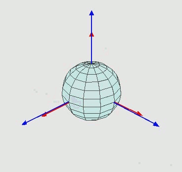

Pose estimation is described by Juan Li et al, as such: The term ‘pose’ is usually employed to refer to the combined information on position and orientation of a moving target (i.e., an object or a human). Position is represented by the three- dimensional location of the object, while orientation may be ex- pressed as a set of consecutive rotations (Li et al., 2017) Tracking pose over time gives an object’s trajectory. Pose is measured by inertial sensors, sensors that track acceleration. Position tracking is immensely powerful and promising in a variety of applications in entertainment, navigation (N. Zhu et al, 2015) and even medicine (Gorder 2012). Specifically, in the past few years, the popularity of consumer virtual reality devices has skyrocketed. Tracking position in 3D space has proved to be more of a challenge than it might first appear. Most consumer VR devices make use of gyroscope to track orientation, but rely on a trackpad or controller for movement. Even if VR software does make use of position tracking, it does so in an incredibly limited scope, limiting movement to a few square meters, where drift error is minimized. Position tracking is not just limited to VR entertainment, precise indoor tracking can help a consumer navigate through an IKEA or guide a firefighter out of a burning building. Motion tracking joints in tennis athletes was even shown to prevent athletic injuries (Gorder 2012).
Measuring spaital position in R3 space requires six degrees of freedom. This means 6 discrete measurements are required. 3 for rotation, 3 for position. The position measurments should be trivial to understand. They are expressed with respect to three orthagonal axies. The rotational measurements are a little more difficult to compreheend.
Rotational measurements can be measured in several paradigms. Euler angles are the most versatile paradigm. You can think of these angles as pitch, yaw, and roll.
The only measurements we can really take are inertial measurments. These are obtained via the inertial sensors. To get from accelration to position an integration algorithm must be applied twice. In numerical integration, there will be some loss of percision, since this algorithm is applied twice several times a second, the error can compound very quickly.
An integral is an anti-derivitive. Some sort of numerical integration technique must be applied to get the integral of discrete data points. In the case of this project, the right hand rule approximation was used.